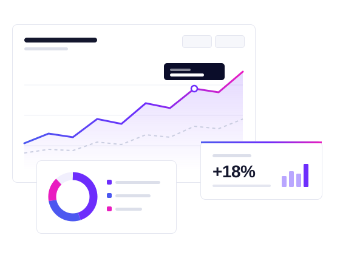
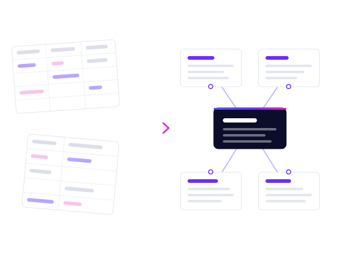
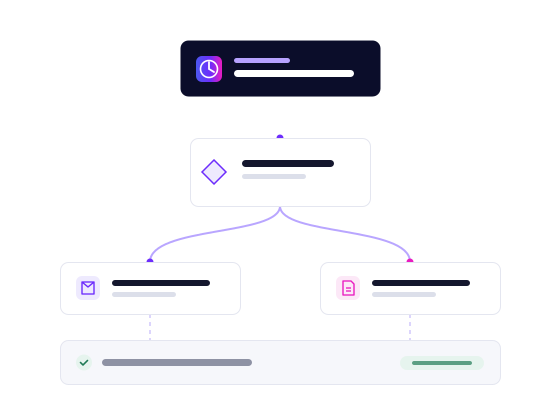

Soluções
Nossas soluções
Nosso foco é análise de dados e dashboards de gestão. E, como especialistas em Microsoft 365, também desenvolvemos automações, aplicativos e sistemas que mantêm os dados organizados e a operação em dia.
Os números do seu negócio, claros e atualizados.
Painéis interativos que reúnem os indicadores mais importantes em um só lugar, atualizados automaticamente e acessíveis do computador ou do celular.

Análise que responde às perguntas do negócio.
Investigamos os números da empresa para entender o que está acontecendo — e por quê. E organizamos a base de dados para que cada indicador seja confiável.

Também desenvolvemos
Microsoft 365, automação de processos e sistemas sob medida.
Com experiência em desenvolvimento no ecossistema Microsoft 365, também automatizamos processos e criamos aplicativos e sites — sempre a serviço de dados mais confiáveis e de uma operação mais organizada.
Tarefas repetitivas rodando sozinhas.
Fluxos que executam por conta própria o que hoje consome horas da equipe: gerar e enviar relatórios, disparar avisos, mover informações entre sistemas e consolidar planilhas.

Controles feitos para a rotina da sua equipe.
Aplicativos internos para cadastros, solicitações, checklists e controles — com telas pensadas para o jeito que a sua equipe trabalha, no computador, no tablet ou no celular.
Presença digital profissional e plataformas sob medida.
Sites institucionais, páginas de apresentação, áreas de cliente e painéis administrativos — rápidos, bem estruturados e adaptados ao celular.
Vamos conversar
Vamos conversar sobre os dados da sua empresa?
Conte o seu desafio. Respondemos com um caminho possível.
Falar no WhatsApp